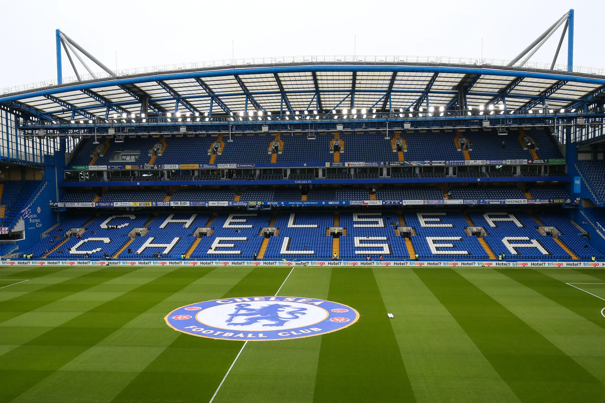

My website will be a Chelsea FC fan page.
The objective of my website will be to show inform Chelsea fans about the history of the club, and to attract people who are new to the sport and don't support any team to pick Chelsea FC as their club. This site is important as Football is more than just a game for fans of the beautiful game. Therefore, it is crucial for a club such a Chelsea FC to have a proper fan website where people can learn about their club while seeing cool stuff as well. For example: big players and why they are big players, goals, trophies, historic moments.
My target audience would be people who are already fans of CFC or people who are searching for a club to support.
The website will include pages such as: history of the club, big players and their role at CFC, historic moments, monumental goals, and the history of our fanbase throughout the years.
